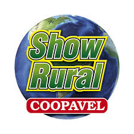
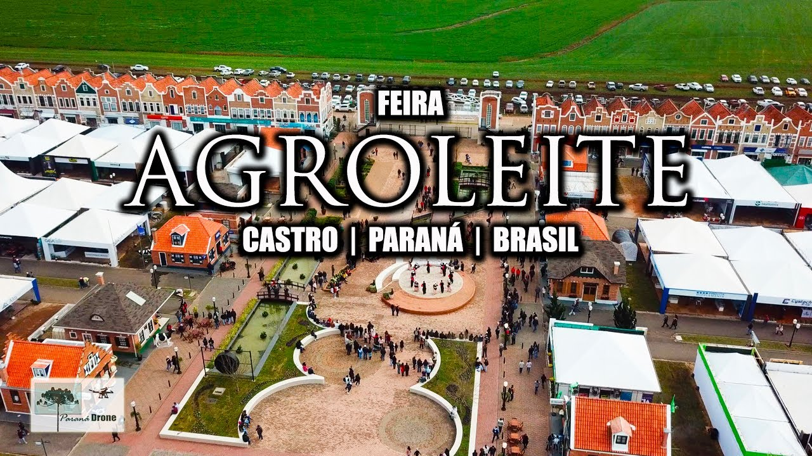

-"Se o campo não planta a cidade não janta" Aumentando o conhecimento e incentivando o uso de novas técnicas e tecnologias agrícolas.
-Show Rural Coopavel: Conciderada a maior feira do agronegócio da America Latina, esta na sua 36ª edição, movimentando todo o senario agricola. Acontecera entre os dias 10 e 14 de fevereiro.
-Agro leite: Entre os dias 6 e 9 de agoto em catro, A Capital Nacional do Leite. São realizados fóruns, seminário internacional, painel e workshops para discutir o agronegócio e atualização sobre mercado e tendências.
